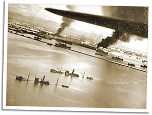

|
j
a v a s c r i p t |
Pg.5/5
September 21, 1944

Manila Bay
The "alert" ending the "air raid" signal came on at 1800. One of the Garriz boys picked up a dud 50-cal. machine gun bullet on Manga Avenue. One such, or shrapnel, killed one of Mrs. Klingler's chickens. I took a much-needed shower when the water came back on at 1900. 2000: A strong explosion occurred a few minutes ago and several are going off now — ten all told. I stepped out to listen: they're coming from the direction of Pandacan, Camp Murphy and the Port Area. I peered out after hearing several planes just before 2130. A SEVERE explosion started a fire — all flame and no smoke — near the Port Area. The air-raid alarm stayed silent. |
|
|
|
|